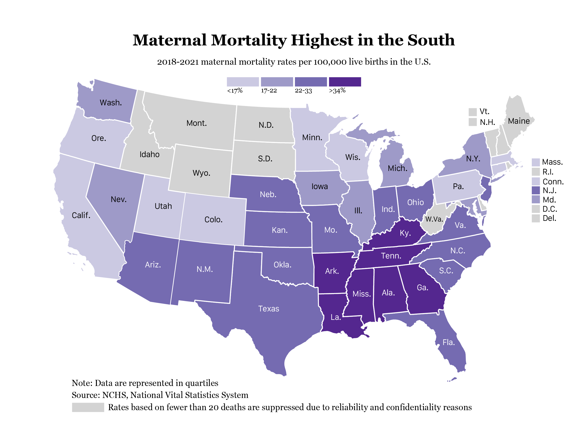
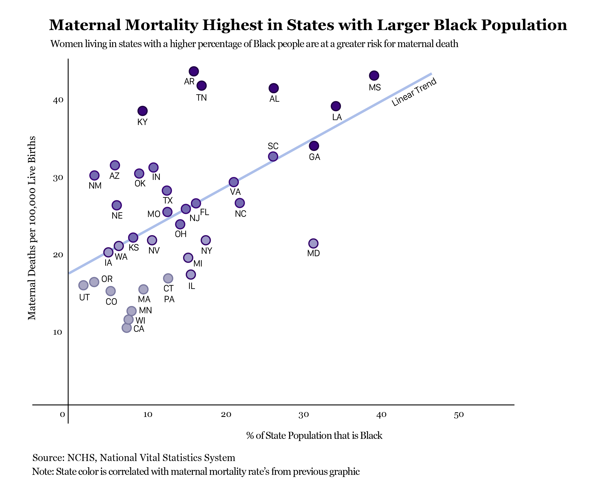
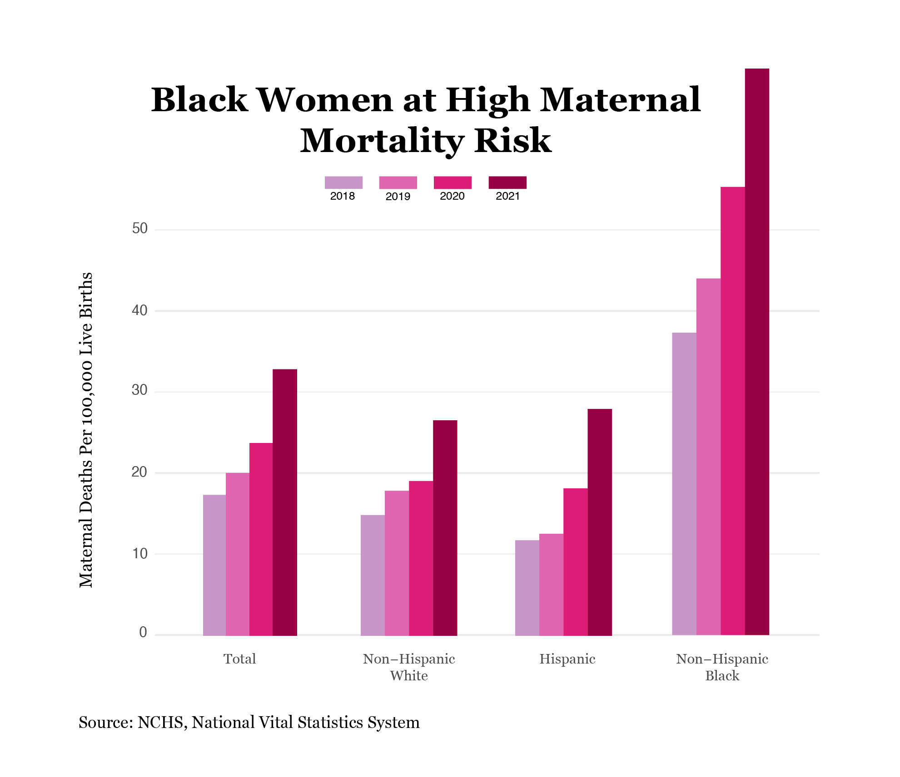
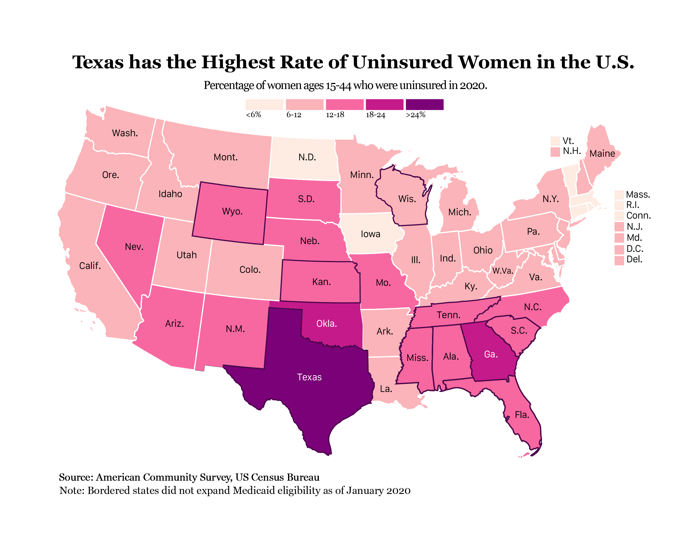

By Ava Glazier
Healthcare in the United States is incredibly complex. On the one hand, we boast some of the most advanced technology and innovative medical care in the world. Yet, despite these achievements and our significant expenditures, the system fails millions of people.
As a woman growing up in the U.S., I have always been keenly aware of my rights, how they can be jeopardized, and the importance of advocating for myself when seeking care. This awareness is a privilege that is not afforded to everyone. Many individuals lack the knowledge or confidence to navigate the intricacies of healthcare, especially in areas where female-specific care, such as pregnancy, is concerned. I was fortunate enough to grow up in New England, where maternal mortality rates are among the lowest in the country. As I began to study the disparities in maternal health, however, I realized not everyone has access to the same level of care or resources, particularly in regions where healthcare infrastructure is lacking and systemic barriers persist.
Using national data from the CDC and the U.S. census, this narrative aims to explore the geographic, political, and racial disparities that contribute to the varying rates of maternal mortality in the U.S., as well as propose some policy and advocacy solutions to reduce this burden.
To understand the scope of maternal mortality in the U.S., we must begin by exploring the geographic variation.
As this map highlights, maternal deaths are particularly concentrated in the South. Though several factors contribute to maternal deaths, racial disparities in healthcare are often a contributor to these deaths in the United States.
As this map highlights, maternal mortality is highest in states with a larger percentage of Black individuals. The clear linear trend indicates that this relationship is significant, and should be explored further. Historical racism in the South, limited access to care, and systemic bias may all be contributing factors to this disturbing trend.
Unfortunately, this finding has been consistent over the past 4 years. Black women are nearly 3 times more likely to die from pregnancy-related causes than white women.
Alarmingly, maternal mortality has also been on the rise for the past 4 years. Though COVID-19 likely contributed, this trend underscores the need for immediate action to reduce maternal health disparities in the U.S.
Interestingly, we see a relationship between maternal mortality and insurance status as well. The map below highlights the number of uninsured women in each state.
This map closely mirrors the initial map of maternal mortality in the U.S., suggesting a correlation between maternal death and insurance status. Highlighted states have not expanded Medicaid. Though Medicaid finances the majority of births in the United States (and 70% of Black births), postpartum coverage is limited. Moreover, women in states that have not expanded Medicaid often lose all coverage two months after giving birth. Maternal mortality rates are calculated based on pregnancy-related deaths within one year postpartum, with over half occurring after the two-month mark. Therefore, the loss of coverage two months postpartum can severely impact a woman's health and likely contribute to the observed disparities.
The Biden-Harris administration has committed to cutting the rates of maternal mortality and morbidity, reducing the disparities in maternal health outcomes, and improving the overall experience during and after pregnancy for people across the country. Although there is still much progress to be made, the administration recently passed the Consolidated Appropriations Act of 2023 allowing states to expand Medicaid postpartum coverage to 12 months. Acts like these have the potential to save millions of lives and are a result of relentless advocacy from various stakeholders.
While this narrative only scratches the surface of maternal mortality in the U.S., it is my hope that these visualizations are a wake-up call and inspire future advocacy efforts at both the local and national levels.